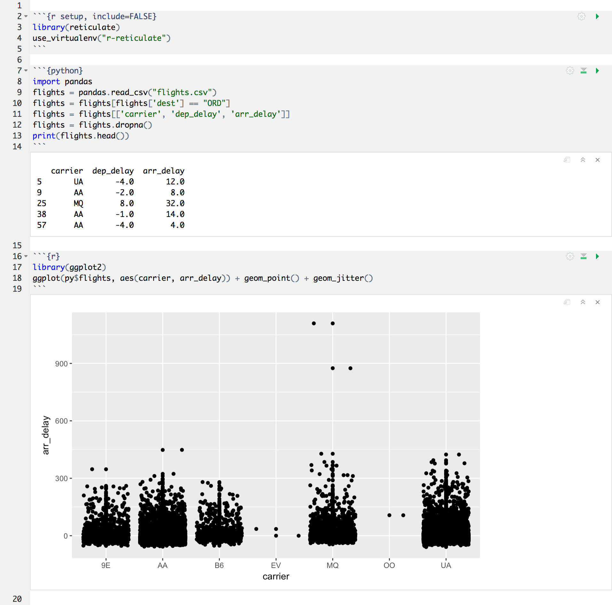
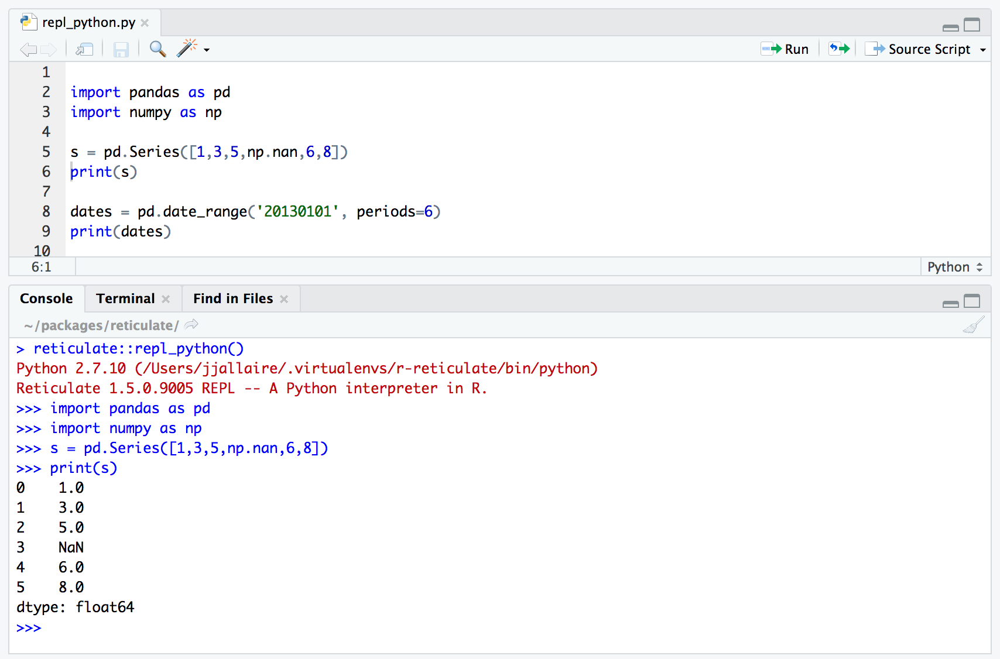

RStudio IDE Tools for reticulate
Source:vignettes/rstudio_ide.Rmd
Overview
The current RStudio v1.2 preview release includes experimental support for the reticulate package, including:
Support for executing reticulated Python chunks within R Notebooks.
Line-by-line execution of Python code using the reticulate
repl_python()function.Sourcing Python scripts using the reticulate
source_python()function.Code completion and inline help for Python.
Display of matplotlib plots within both notebook and console execution modes.
A note about the philosophy behind Python tools within RStudio: these tools are not intended for standalone Python work but rather explicitly aimed at the integration of Python into R projects (and as such are closely tied to the reticulate package).
There are many IDEs available for doing data science with Python including JupyterLab, Rodeo, Spyder, and Visual Studio Code, and we strongly recommend using one of them for Python-only projects. However, if you are using reticulated Python within an R project then RStudio provides a set of tools that we think you will find extremely helpful.
Installation
You can download the RStudio v1.2 preview release here: https://www.rstudio.com/rstudio/download/preview/.
All of the features described below require that you have previously installed the reticulate package, which you can do as follows:
R Notebooks
R Notebooks have been enhanced to support executing Python chunks using the reticulate Python engine. For example:


Line-by-Line Execution
You can execute code from Python scripts line-by-line using the Run button (or Control+Enter) in the same way as you execute R code line-by-line. RStudio will automatically switch into reticulate’s repl_python() mode whenever you execute lines from a Python script:

Type exit from the Python REPL to exit back into R (RStudio will also automatically switch back to R mode whenever you execute code from an R script).
Sourcing Scripts
Click the editor’s Source Script button within a Python source file to execute a script using reticulate’s source_python() function: